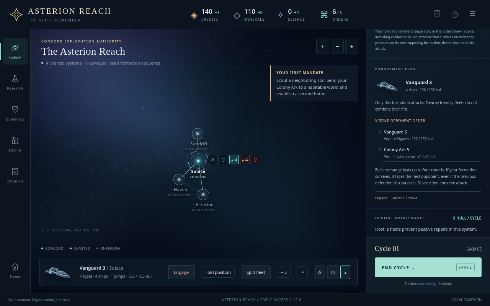
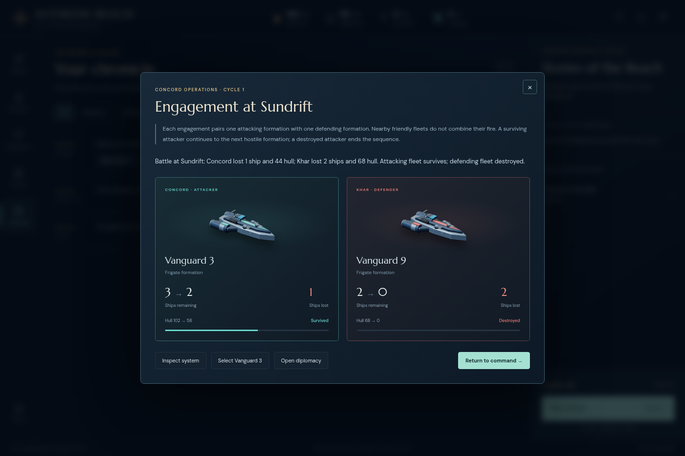
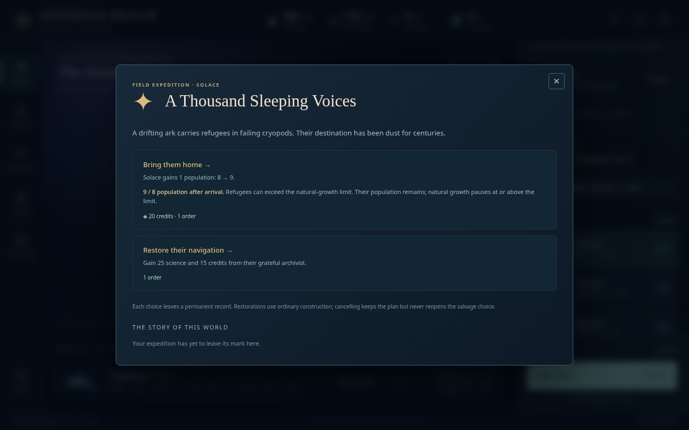
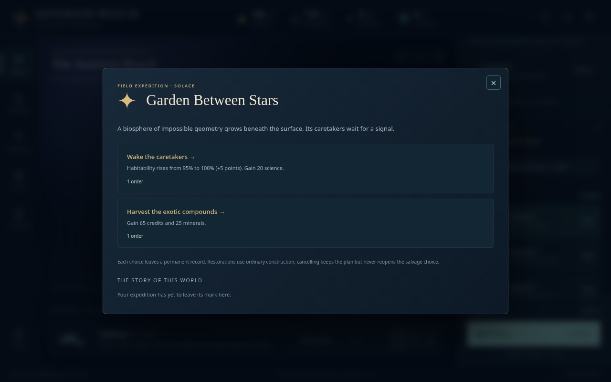

Actual military campaign · Field Guide
Know what a command will do
Version 0.13 explains separate fleet engagements and attainable discovery rewards. It preserves combat, reward, cost and save rules; the AI valuation correction removes the population bonus when no owned capital can receive refugees.
Formation scope
The selected military formation alone attacks. With current sensors, the preview lists opponents in ordinary command order. Each exchange lasts up to four rounds; a surviving attacker proceeds even when the previous defender also survives. A destroyed attacker cannot reach later formations. Defensive guidance includes civilian formations in their current order.
Unknown opposition stays unknown. Eight pure-projection regressions compare forecasts with real ordinary move/attack results, check conditional continuation and attacker destruction, perturb hidden fleets without changing the preview, and verify copied snapshots. Historical portraits use only saved class and owner. Removing current fleets leaves the report body unchanged; navigation to surviving fleets correctly depends on current state.

Explicitly synthetic boundary fixture, independently inspected at 1280 pixels. The first exchange is contested and the surviving attacker continues to the second formation.The historical Sable report records Veyr Vanguard 54 and Concord Vanguard 28. The actual cycle 42 export also contains a cruiser, but that later snapshot does not establish its battle-time location. No historical nonparticipant is invented. Historical facts and original DOM · Actual unchanged export.

Frozen production report: portraits identify each saved ship class; losses remain the actual recorded values.Attainable discovery effects
The military player treated a full capital as unable to accept refugees. Reproduction corrected that assumption: 8/8 becomes 9/8, retains its population and ordinary contributions, and pauses natural growth. The new choice states that outcome before charging 20 credits and one order.

Current capital, actual population change and unchanged cost are visible together.A Garden at 95% habitability gains 5 points; at 100% it gains none. Both retain 20 science. An unavailable owned capital discloses zero population without revealing foreign population or capacity. Echo wording acknowledges previously charted stars without counting hidden geography. Nine engine regressions cover boundaries, exact effects and history, reloads, privacy, atomic rejection and AI selection.

The displayed effect matches the existing capped command.Evidence and limits
The independent review passed eight combat engine cases and six browser checks with no page errors or inspection mutations. Refugee dialogs were inspected at 1280 and 390 pixels without horizontal overflow. These are targeted synthetic boundary checks, not new human campaigns or difficulty measurements. The complete military report separately preserves actual UI play and its exact command replay.
The original review scripts preserve their local paths as methodology evidence. For supported regression execution, run npm test and npm run test:browser from the repository. Browser acceptance includes paid refugee arrival/reload, capped Garden reward, unavailable recipient, visible combat preview and historical report rendering.